Análisis de Datos Categóricos (SOC3070)
Bonus: Regresión Logística (Multinomial) Ordenada
2026-07-23
Antes · Hoy · Después
Antes
regresión multinomial e interpretación de efectos.
Hoy
regresión logística ordinal y efectos marginales.
Después
modelos de conteo.
Regresión Logística (Multinomial) Ordenada
Estructura de un modelo de regresión logística multinomial ordenada
Un modelo de regresión logística ordenada generaliza la regresión logística (binomial) a situaciones en que la variable dependiente es una variable discreta con dos o más valores ordenados (ejemplo: “muy de acuerdo”, “algo de acuerdo”, “poco de acuerdo”, etc..).
Configuración
- Tenemos n observaciones (individuos) independientes: i = 1, \dots, n
- Para cada observación observamos datos y_{i}, \dots , y_{n} que actúan como variable dependiente, donde y_{i} \in \{j:1,2, \cdots, J\}
- Las J categorías de y_{i} siguen un orden.
- Asumimos que estos datos son realizaciones de n variables aleatorias con probabilidades \{p_{1}, p_{2}, \dots, p_{J}\}.
- Dichas probabilidades varían de individuo en individuo en función de ciertas covariables.
Fundamentos teóricos
Interpretación de regresión logística en términos de variable latente
Regresión logística binomial, variable latente
Una regresión logística binomial tiene y_{i} \in \{0,1\}.
y_{i} \sim \text{Bernoulli}\big(p_{i} = e^{\eta_{i}}/(1 + e^{\eta_{i}})\big)
donde \quad \eta_{i} = \beta_{0} + \beta_{1}x_{1i} + \dots + \beta_{k}x_{ki}
Ejemplo: si \eta_{i}=0, entonces: p_{i}=1/(1+1)=0.5
Una formulación alternativa describe la variable dependiente y como una manifestación discreta de una variable latente (inobservada) continua, y^{*}.
y_{i} = \begin{cases} 1 \quad \text{si} \quad y^{*}_{i} > 0 \\ 0 \quad \text{si} \quad y^{*}_{i} < 0 \end{cases}
y^{*}_{i} = \beta_{0} + \beta_{1}x_{1i} + \dots + \beta_{k}x_{ki} + \epsilon_{i}
- \epsilon_{i} sigue una distribución de probabilidad logística: \epsilon_{i} \sim \text{logistic}(\mu=0,\sigma=\pi/\sqrt{3}) \approx \mathcal{N}(0,1.6)
Regresión logística binomial, variable latente
Distribución de error aleatorio en regresión logística con variable latente:
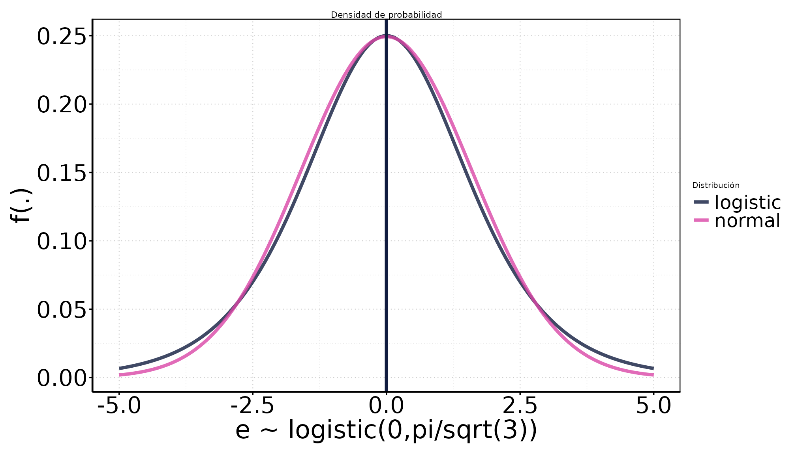
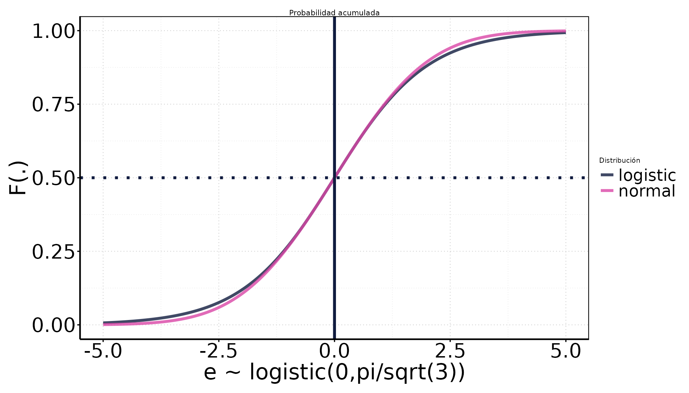
Regresión logística binomial, variable latente
y_{i} = \begin{cases} 1 \quad \text{si} \quad y^{*}_{i} > 0 \\ 0 \quad \text{si} \quad y^{*}_{i} < 0 \end{cases}
y^{*}_{i} = \beta_{0} + \beta_{1}x_{1i} + \dots + \beta_{k}x_{ki} + \epsilon_{i}
- \epsilon_{i} \sim \text{logistic}(\mu=0,\sigma=\pi/\sqrt{3})
\begin{align}\mathbb{P}(y_{i}=0) &= \mathbb{P}(y^{*}_{i}<0) \\ \\ &= \mathbb{P}(\beta_{0} + \beta_{1}x_{1i} + \dots + \beta_{k}x_{ki} + \epsilon_{i} < 0) \\ \\ &= \mathbb{P}(\epsilon_{i} < -(\beta_{0} + \beta_{1}x_{1i} + \dots + \beta_{k}x_{ki})) \\ \\ &= F_{\epsilon_{i}}(-(\beta_{0} + \beta_{1}x_{1i} + \dots + \beta_{k}x_{ki})) \quad \text{ i.e. función de probabilidad acumulada} \\ \\ &= \text{logit}^{-1}(-(\beta_{0} + \beta_{1}x_{1i} + \dots + \beta_{k}x_{ki}) \end{align} ## Regresión logística binomial, variable latente Ajustando el siguiente modelo: \text{logit(alta demanda}_{i}) = \beta_{0} + \beta_{1}*\text{temp}_{i} obtenemos:
(Intercept) temp
-3.676 4.827 (Intercept)
0.779 (Intercept)
0.779 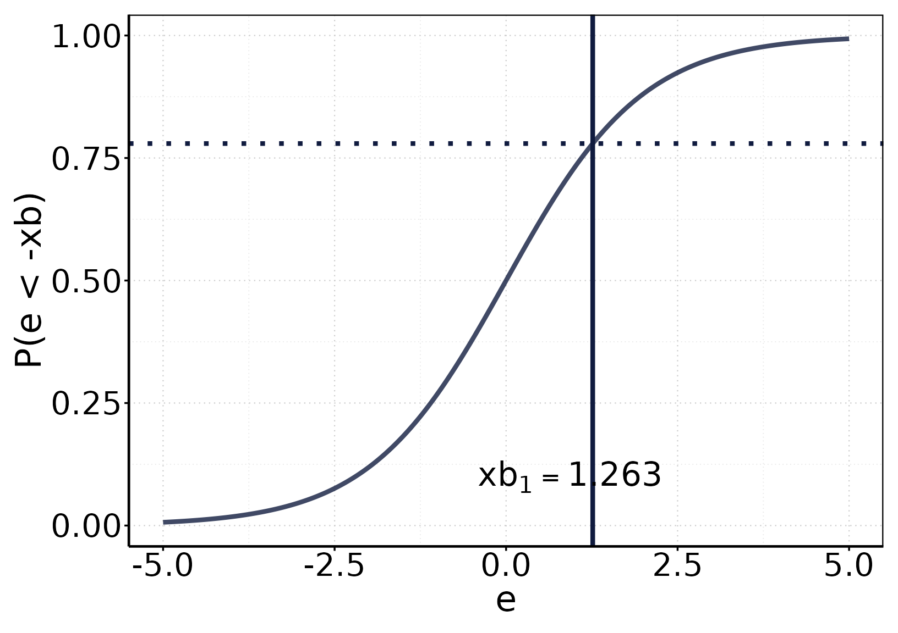
Regresión logística (multinomial) ordenada
Regresión logística (multinomial) ordenada, variable latente
La formulación con variable latente se puede generalizar al caso en que la variable dependiente toma J valores ordenados, tal que y \in \{1,2,\dots,J\}.
y^{*}_{i} = \beta_{1}x_{1i} + \dots + \beta_{k}x_{ki} + \epsilon_{i}
\epsilon_{i} \sim \text{logistic}(\mu=0,\sigma=\pi/\sqrt{3})
En este caso la variable latente y^{*} es dividida en J intervalos usando J-1 cutoff points: \alpha_{1} < \alpha_{2} < \dots < \alpha_{J-1} < \alpha_{J}

\begin{align}y_{i}=1 \quad \text{si }& y^{*}_{i} < \alpha_{1} \\ \\ y_{i}=2 \quad \text{si }& \alpha_{1} < y^{*}_{i} < \alpha_{2} \\ \\ & \vdots \\ \\ y_{i}=J \quad \text{si }& y^{*}_{i} > \alpha_{J-1} \end{align}
Regresión logística (multinomial) ordenada, variable latente
Esta paramatrización implica que:

\begin{align}\mathbb{P}(y_{i}\leq 1) &= \mathbb{P}(y^{*}_{i}< \alpha_{1}) \\ \\ &= \mathbb{P}(\beta_{1}x_{1i} + \dots + \beta_{k}x_{ki} + \epsilon_{i} < \alpha_{1}) \\ \\ &= \mathbb{P}(\epsilon_{i} < \alpha_{1} -(\beta_{1}x_{1i} + \dots + \beta_{k}x_{ki})) \\ \\ &= F_{\epsilon_{i}}(\alpha_{1} -(\beta_{1}x_{1i} + \dots + \beta_{k}x_{ki})) \\ \\ &= \text{logit}^{-1}(\alpha_{1} -(\beta_{1}x_{1i} + \dots + \beta_{k}x_{ki})) \end{align}
Regresión logística (multinomial) ordenada, variable latente
Asimismo,
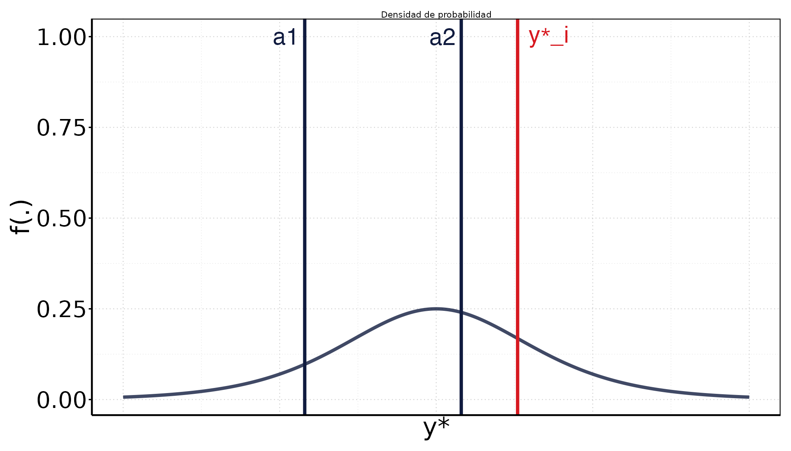
\begin{align}\mathbb{P}(y_{i}\leq 2) &= \mathbb{P}(y^{*}_{i}< \alpha_{2}) \\ \\ &= \mathbb{P}(\beta_{1}x_{1i} + \dots + \beta_{k}x_{ki} + \epsilon_{i} < \alpha_{2}) \\ \\ &= \mathbb{P}(\epsilon_{i} < \alpha_{2} -(\beta_{1}x_{1i} + \dots + \beta_{k}x_{ki})) \\ \\ &= F_{\epsilon_{i}}(\alpha_{2} -(\beta_{1}x_{1i} + \dots + \beta_{k}x_{ki})) \\ \\ &= \text{logit}^{-1}(\alpha_{2} -(\beta_{1}x_{1i} + \dots + \beta_{k}x_{ki})) \end{align}
y así sucesivamente …
Regresión logística (multinomial) ordenada, variable latente
Reiterando, las probabilidades “acumuladas” en cada valor sucesivo de la variable y vienen dadas por: \mathbb{P}(y_{i} \leq 1) = \text{logit}^{-1}(\alpha_{1} - (\beta_{1}x_{1i} + \dots + \beta_{k}x_{ki}))
\mathbb{P}(y_{i} \leq 2) = \text{logit}^{-1}(\alpha_{2} - (\beta_{1}x_{1i} + \dots + \beta_{k}x_{ki})) \vdots
\mathbb{P}(y_{i} \leq J-1) = \text{logit}^{-1}(\alpha_{J-1} - (\beta_{1}x_{1i} + \dots + \beta_{k}x_{ki})) donde
- \alpha_{1}, \alpha_{2}, \dots, \alpha_{j-1} son cutoff points que dividen la variable latente y^{*}
- Valores más alto de y^{*} implican una mayor probabilidad de obtener valores en la variable discreta y
Regresión logística (multinomial) ordenada, variable latente
Sintéticamente:
\mathbb{P}(y_{i} \leq j) = \text{logit}^{-1}(\alpha_{j} - (\beta_{1}x_{1i} + \dots + \beta_{k}x_{ki}))

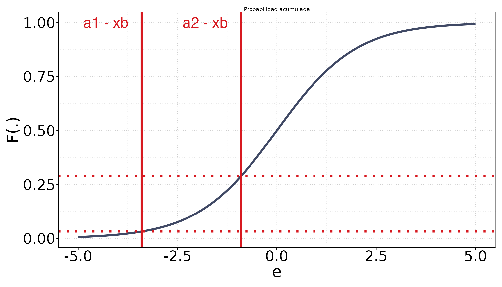
Regresión logística (multinomial) ordenada
La función de probabilidad acumulada \mathbb{P}(y_{i} \leq j) = \text{logit}^{-1}(\alpha_{j} - (\beta_{1}x_{1i} + \dots + \beta_{k}x_{ki}))
puede ser re-expresada como regresión logística aplicando logit link a ambos lados obtenemos:
\text{logit}[ \mathbb{P}(y_{i} \leq j)] = \alpha_{j} - (\beta_{1}x_{1i} + \dots + \beta_{k}x_{ki}) es decir,
\ln \frac{\mathbb{P}(y_{i} \leq j)}{1 - \mathbb{P}(y_{i} \leq j)} = \ln \frac{\mathbb{P}(y_{i} \leq j)}{\mathbb{P}(y_{i} > j)} = \alpha_{j} - (\beta_{1}x_{1i} + \dots + \beta_{k}x_{ki})
Regresión logística (multinomial) ordenada en la práctica
Continuando con los datos de demanda de bicicletas, pero ahora considerando la demanda como una variable discreta ordenada:
# A tibble: 8,645 × 16
season mnth day hr holiday weekday workingday weathersit temp atemp hum windspeed casual registered bikers
<dbl> <fct> <dbl> <fct> <dbl> <dbl> <fct> <fct> <dbl> <dbl> <dbl> <dbl> <dbl> <dbl> <dbl>
1 1 Jan 1 0 0 6 no hábil clear 0.240 0.288 0.810 0 3 13 16
2 1 Jan 1 1 0 6 no hábil clear 0.220 0.273 0.800 0 8 32 40
3 1 Jan 1 2 0 6 no hábil clear 0.220 0.273 0.800 0 5 27 32
4 1 Jan 1 3 0 6 no hábil clear 0.240 0.288 0.750 0 3 10 13
5 1 Jan 1 4 0 6 no hábil clear 0.240 0.288 0.750 0 0 1 1
6 1 Jan 1 5 0 6 no hábil cloudy/misty 0.240 0.258 0.750 0.090 0 1 1
7 1 Jan 1 6 0 6 no hábil clear 0.220 0.273 0.800 0 2 0 2
8 1 Jan 1 7 0 6 no hábil clear 0.200 0.258 0.860 0 1 2 3
9 1 Jan 1 8 0 6 no hábil clear 0.240 0.288 0.750 0 1 7 8
10 1 Jan 1 9 0 6 no hábil clear 0.320 0.348 0.760 0 8 6 14
# ℹ 8,635 more rows
# ℹ 1 more variable: demand_level <ord>[1] "demand_level:"[1] "baja" "media" "alta" Regresión logística (multinomial) ordenada en la práctica
Variable latente (baja demanda –> alta demanda) y^{*} = \beta_{1}\text{temp}_{i} + \epsilon_{i}
Logit acumulado: \ln \frac{\mathbb{P}(y_{i} \leq j)}{\mathbb{P}(y_{i} > j)} = \alpha_{j} - \beta_{1}\text{temp}_{i}
Value Std. Error
temp 4.236 0.111
baja|media 1.248 0.055
media|alta 2.868 0.063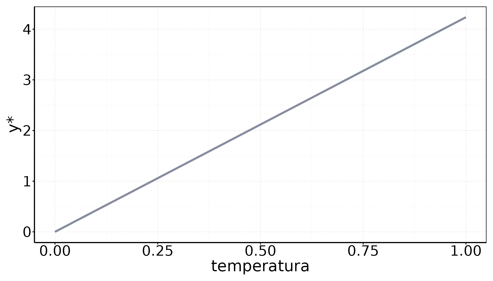
Regresión logística (multinomial) ordenada en la práctica
Variable latente (baja demanda –> alta demanda) y^{*} = \beta_{1}\text{temp}_{i} + \epsilon_{i}
Logit acumulado: \ln \frac{\mathbb{P}(y_{i} \leq j)}{\mathbb{P}(y_{i} > j)} = \alpha_{j} - \beta_{1}\text{temp}_{i}
Value Std. Error
temp 4.236 0.111
baja|media 1.248 0.055
media|alta 2.868 0.063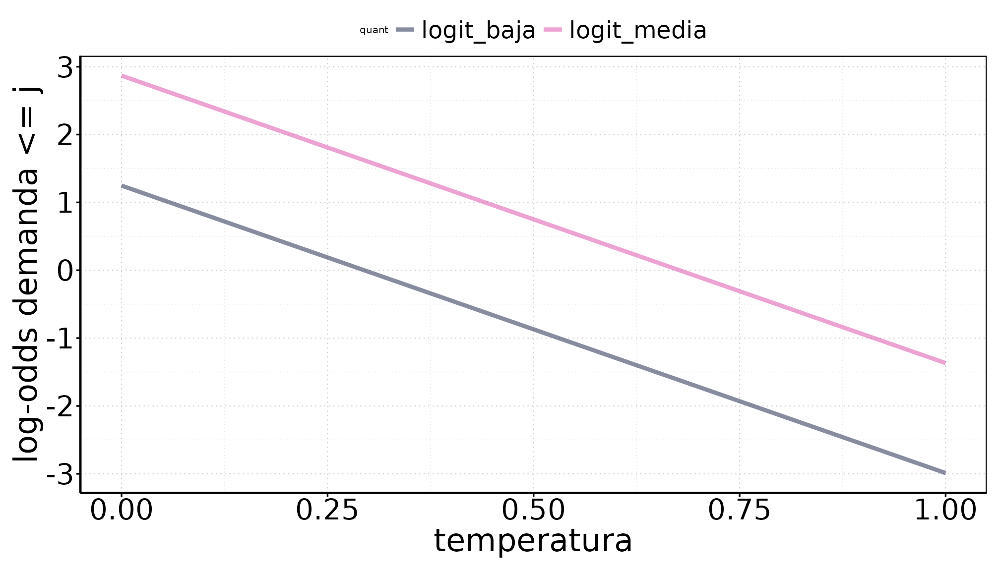
Regresión logística (multinomial) ordenada en la práctica
Nuestro modelo: \ln \frac{\mathbb{P}(y_{i} \leq j)}{\mathbb{P}(y_{i} > j)} = \alpha_{j} - \beta_{1}\text{temp}_{i}
Value Std. Error
temp 4.236 0.111
baja|media 1.248 0.055
media|alta 2.868 0.063
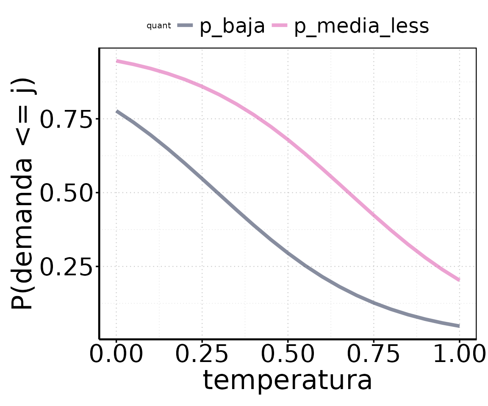
Regresión logística (multinomial) ordenada en la práctica
Podemos calcular los valores de la variable latente a partir del output del modelo. Usemos el caso de un hora con temp=1
Nuestro modelo: y^{*} = \beta_{1}\text{temp}_{i}
Value Std. Error
temp 4.236 0.111
baja|media 1.248 0.055
media|alta 2.868 0.063[1] 4.236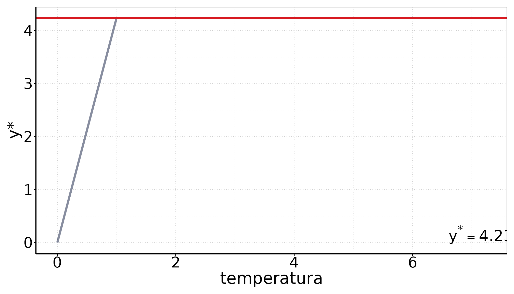
Regresión logística (multinomial) ordenada en la práctica
Igualmente podemos calcular las probabilidades acumuladas a partir del output del modelo. Usemos el caso de un hora con temp=1
Nuestro modelo: \ln \frac{\mathbb{P}(y_{i} \leq j)}{\mathbb{P}(y_{i} > j)} = \alpha_{j} - \beta_{1}\text{temp}_{i}
Value Std. Error
temp 4.236 0.111
baja|media 1.248 0.055
media|alta 2.868 0.063 pcum_baja pcum_media
0.048 0.203 Equivalente:
[1] 0.048 0.203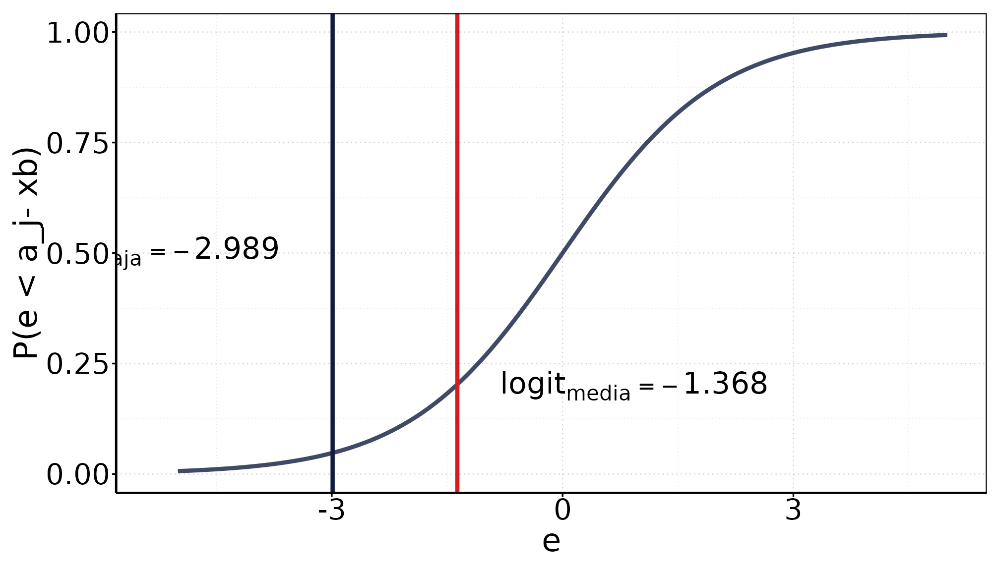
Regresión logística (multinomial) ordenada: probabilidad de categoria j
\text{Dado} \quad \mathbb{P}(y_{i} \leq j) = \text{logit}^{-1}(\alpha_{j} - (\beta_{1}x_{1i} + \dots + \beta_{k}x_{ki}))
Podemos calcular la probabilidad de ocurrencia de la categoría j como sigue:
\begin{align}\mathbb{P}(y_{i} = j) &= \mathbb{P}(y_{i}<j) - \mathbb{P}(y_{i}< j-1) \\ \\ &= \text{logit}^{-1}(\alpha_{j} - (\beta_{1}x_{1i} + \dots + \beta_{k}x_{ki}) ) - \text{logit}^{-1}(\alpha_{j-1} - (\beta_{1}x_{1i} + \dots + \beta_{k}x_{ki})) \\ \\ &= \frac{1}{1 + e^{-(\alpha_{j} - (\beta_{1}x_{1i} + \dots + \beta_{k}x_{ki}) )}} - \frac{1}{1 + e^{-(\alpha_{j-1} - (\beta_{1}x_{1i} + \dots + \beta_{k}x_{ki}))}} \end{align} ## Regresión logística (multinomial) ordenada en la práctica
Nuestro modelo: \ln \frac{\mathbb{P}(y_{i} \leq j)}{\mathbb{P}(y_{i} > j)} = \alpha_{j} - \beta_{1}\text{temp}_{i}
Value Std. Error
temp 4.236 0.111
baja|media 1.248 0.055
media|alta 2.868 0.063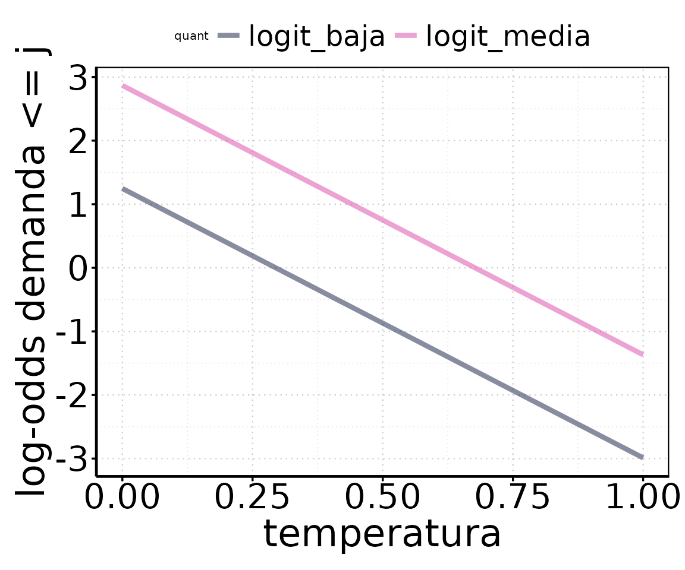
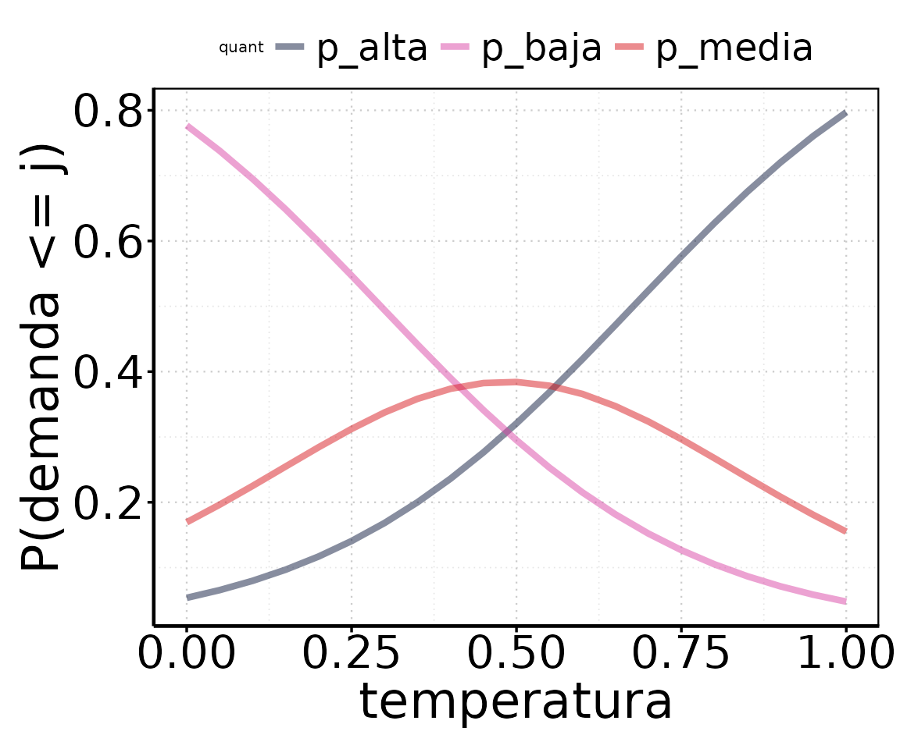
Regresión logística (multinomial) ordenada en la práctica
Usando \mathbb{P}(y_{i} = j) = \text{logit}^{-1}(\alpha_{j} - (\beta_{1}x_{1i} + \dots + \beta_{k}x_{ki})) - \text{logit}^{-1}(\alpha_{j-1} - (\beta_{1}x_{1i} + \dots + \beta_{k}x_{ki})) calculamos las probabilidades a partir del output del modelo. Para un hora con temp=1:
Value Std. Error
temp 4.236 0.111
baja|media 1.248 0.055
media|alta 2.868 0.063 pcum_baja pcum_media
0.048 0.203 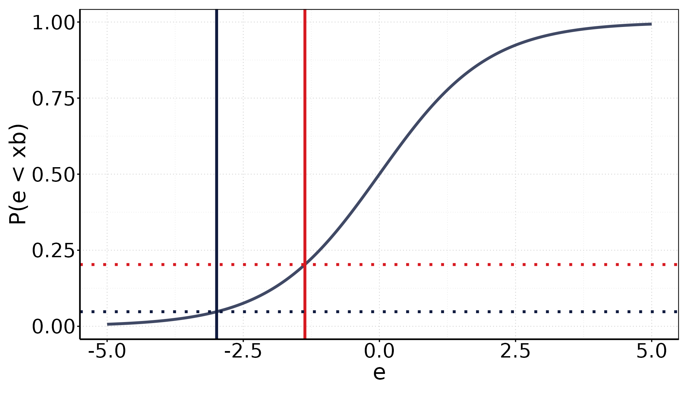
p_baja p_media p_alta
0.048 0.155 0.797 Regresión logística (multinomial) ordenada en la práctica
\mathbb{P}(y_{i} = j) = \text{logit}^{-1}(\alpha_{j} - (\beta_{1}x_{1i} + \dots + \beta_{k}x_{ki})) - \text{logit}^{-1}(\alpha_{j-1} - (\beta_{1}x_{1i} + \dots + \beta_{k}x_{ki}))
p_baja p_media p_alta
0.048 0.155 0.797 baja media alta
0.048 0.155 0.797 [1] alta
Levels: baja media alta
Estimación
Estimación
- Coeficientes y cutoff points son estimados via MLE
- En
Rusaremos funciónMASS::polrpara ajustar estos modelos.- Estima coeficientes correspondientes a efectos sobre la variable latente y^{*}
- Estima cutoff points
Interpretación
Efectos marginales sobre el logit
Un ejemplo empírico
Continuando con los datos de demanda de bicicletas, ajustaremos el siguiente modelo: \underbrace{\ln \frac{\mathbb{P}(y_{i} \leq j)}{\mathbb{P}(y_{i} > j) } }_{\text{logit}(\mathbb{P}(y_{i} \leq j))}= \alpha_{j} - (\beta_{1}\text{temp}_{i} + \beta_{2}\text{hábil}_{i}) donde:
- y_{i} \in \{\text{"baja"},\text{"media"}, \text{"alta"}\}
- Probabilidades son una función de la temperatura (temp) y del tipo de día (hábil / no hábil)
Call:
polr(formula = demand_level ~ temp + workingday, data = bikedata)
Coefficients:
Value Std. Error t value
temp 4.237 0.111 38.023
workingdayhábil -0.005 0.044 -0.121
Intercepts:
Value Std. Error t value
baja|media 1.244 0.062 20.119
media|alta 2.865 0.068 41.878
Residual Deviance: 17390.520
AIC: 17398.520 Efectos marginales sobre el logit
Dado el siguiente modelo de regresión logística ordenada:
y^{*}= \beta_{1}x_{1i} + \dots + \beta_{k}x_{ki} y \ln \frac{\mathbb{P}(y_{i} \leq j)}{\mathbb{P}(y_{i} > j) } = \alpha_{j} - (\beta_{1}x_{1i} + \dots + \beta_{k}x_{ki})
- El efecto marginal de x_{k} sobre la variable latente y^{*} está dado por:
\frac{\partial y^{*} }{\partial x_{k}} = \beta_{k}
“Un aumento en \Delta unidades de x_{k} se traduce en un cambio en \Delta \beta_{k} unidades la variable latente y^{*}”
Efectos marginales sobre el logit
Asimismo, dado \ln \frac{\mathbb{P}(y_{i} \leq j)}{\mathbb{P}(y_{i} > j) } = \alpha_{j} - (\beta_{1}x_{1i} + \dots + \beta_{k}x_{ki})
- los puntos de corte \alpha_{j} corresponden al logit de la probabilidad que y_{i} tome un valor menor o igual que j (en vez mayor que j), cuando x_{1} = \dots = x_{k} = 0
- El efecto marginal de x_{k} sobre el logit de la probabilidad que y_{i} tome un valor menor o igual que j está dado por:
\frac{\partial\text{logit}[\mathbb{P}(y_{i} \leq j)]}{\partial x_{k}} = -\beta_{k}
“Un aumento en \Delta unidades de x_{k} se traduce en un cambio en -\beta_{k}\Delta unidades en el logit de la probabilidad que y_{i} sean menor o igual que j”
Importante: El efecto marginal sobre la variable latente ( \beta_{k} ) y sobre el logit ( -\beta_{k} ), es el mismo para cualquier valor de j.
Efectos marginales sobre el logit
En nuestro ejemplo: \ln \frac{\mathbb{P}(y_{i} \leq j)}{\mathbb{P}(y_{i} > j)}= \alpha_{j} - (\beta_{1}\text{temp}_{i} + \beta_{2}\text{hábil}_{i})
Value Std. Error
temp 4.237 0.111
workingdayhábil -0.005 0.044
baja|media 1.244 0.062
media|alta 2.865 0.068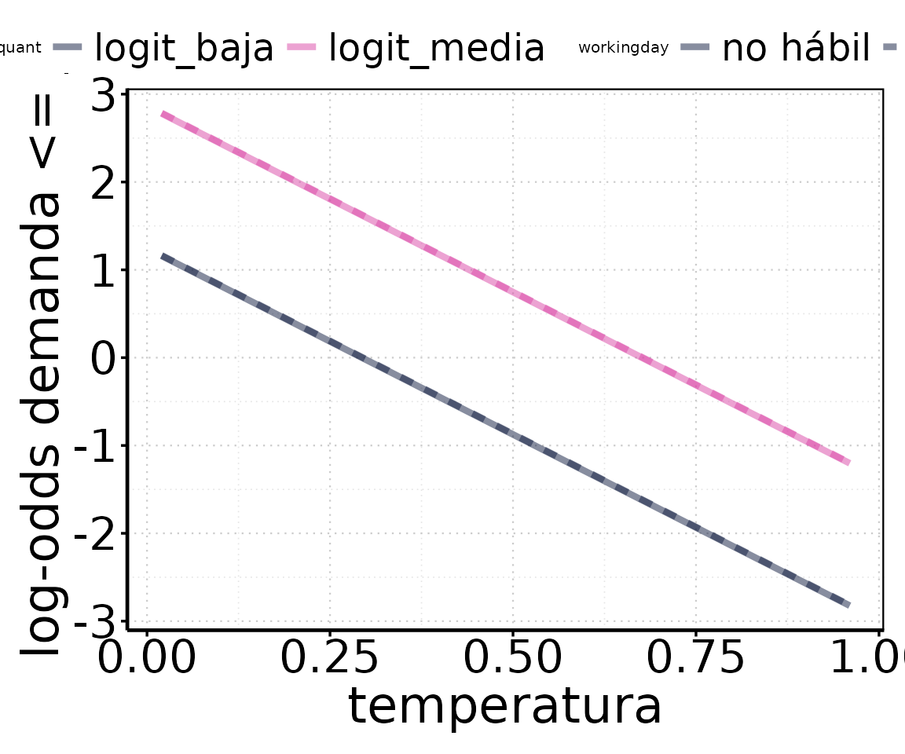
Efectos marginales sobre el logit
Value Std. Error
temp 4.237 0.111
workingdayhábil -0.005 0.044
baja|media 1.244 0.062
media|alta 2.865 0.068Si temp=1 en un día hábil, entonces logit(p_baja) y logit(p_media) son=
baja media
-2.988 -1.367 Si temp=2 en un día hábil, entonces logit(p_baja) y logit(p_media) son=
baja media
-7.225 -5.604 Efectos marginales sobre el logit
Value Std. Error
temp 4.237 0.111
workingdayhábil -0.005 0.044
baja|media 1.244 0.062
media|alta 2.865 0.068Por tanto, el efecto sobre el logit ( -\beta_{temp} ) es:
coef_temp_baja coef_temp_media
-4.237 -4.237 Si temp=1 en un día hábil, entonces logit(p_baja) y logit(p_media) son=
baja media
-2.988 -1.367 Si temp=2 en un día hábil, entonces logit(p_baja) y logit(p_media) son=
baja media
-7.225 -5.604 Efectos multiplicativos sobre las odds
Efectos multiplicativos sobre las odds
Dado el siguiente modelo de regresión logística ordinal: \ln \frac{\mathbb{P}(y_{i} \leq j)}{\mathbb{P}(y_{i} > j) } = \alpha_{j} - (\beta_{1}x_{1i} + \dots + \beta_{k}x_{ki})
exponenciando a ambos lados obtenemos \frac{\mathbb{P}(y_{i} \leq j)}{\mathbb{P}(y_{i} > j) } = e^{\alpha_{j} - (\beta_{1}x_{1i} + \dots + \beta_{k}x_{ki})}
equivalentemente
\frac{\mathbb{P}(y_{i} \leq j)}{\mathbb{P}(y_{i} > j) } = e^{\alpha_{j}}\cdot e^{-\beta_{1} x_{i1}} \cdots e^{-\beta_{k} x_{ik}}
Efectos multiplicativos sobre las odds: odds ratios
Considera la situación en que i y i^{´} son dos observaciones con x_{k}=c y x_{k}=c+1, respectivamente. El resto de las covariables toman valores idénticos.
Las odds de observar \mathbb{P}(y \leq j) vs \mathbb{P}(y > j) son:
- \mathbb{P}(y_{i} \leq j)/\mathbb{P}(y_{i} > j) = e^{\alpha_{j}} \cdot e^{-\beta_{1} x_{i1}} \cdots (e^{-\beta_{k}})^{c}
- \mathbb{P}(y_i^{´} \leq j)/\mathbb{P}(y_i^{´} > j)= e^{\alpha_{j}} \cdot e^{-\beta_{1} x_{i^{´}1}} \cdots (e^{-\beta_{k}})^{c+1}
El ratio de las odds entre i^{´} e i está dado por: \frac{\mathbb{P}(y_i^{´} \leq j)/\mathbb{P}(y_i^{´} > j)}{\mathbb{P}(y_{i} \leq j)/\mathbb{P}(y_{i} > j)} = \frac{e^{\alpha_{j}} \cdot e^{-\beta_{1} x_{i^{´}1}} \cdots (e^{-\beta_{k}})^{c+1}}{e^{\alpha_{j}} \cdot e^{-\beta_{1} x_{i1}} \cdots (e^{-\beta_{k}})^{c}} = e^{-\beta_{k}}
En otras palabras, manteniendo otros factores constantes, e^{-\beta_{k}} representa la odds ratio de \mathbb{P}(y \leq j) vs \mathbb{P}(y > j) entre el caso con x_{k} aumentado en una unidad, y el caso con x_{k} en un nivel basal dado. Importante: La misma odd-ratio aplica para la probabilidad acumula de cualquier j. Por esta razón el modelo logístico ordenado tambien es conocidos como proportional odds model.
Efectos multiplicativos sobre las odds
“Un cambio en \Delta unidades de x_{k} multiplica el ratio entre \mathbb{P}(y<j) vs \mathbb{P}(y>j) por e^{- \beta_{k}\Delta}”
Propiedades:
- e^{-\beta_{k}} está restringido al rango [0,\infty+). Es una constante que “comprime” o amplifica el ratio entre las probabilidades de \mathbb{P}(y<j) vs \mathbb{P}(y>j)
- Si -\beta_{k} < 0 \to (0 < e^{-\beta_{k}} < 1). Es decir, un aumento en x_{k} está asociado con una reducción (multiplicativa) del ratio entre las probabilidades de \mathbb{P}(y<j) vs \mathbb{P}(y>j)
- Si -\beta_{k} = 0 \to (e^{-\beta_{k}} =1). Es decir, un cambio en x_{k} está asociado a un cambio nulo en el ratio entre las probabilidades de \mathbb{P}(y<j) vs \mathbb{P}(y>j)
- Si -\beta_{k} > 0 \to (e^{-\beta_{k}} > 1). Es decir, un aumento en x_{k} está asociado a aumento (multiplicativo) en el ratio entre las probabilidades de \mathbb{P}(y<j) vs \mathbb{P}(y>j)
Efectos multiplicativos sobre las odds
En nuestro ejemplo: \ln \frac{\mathbb{P}(y_{i} \leq j)}{\mathbb{P}(y_{i} > j)}= \alpha_{j} - (\beta_{1}\text{temp}_{i} + \beta_{2}\text{hábil}_{i}), donde \frac{\mathbb{P}(y_{i} \leq j)}{\mathbb{P}(y_{i} > j)}= e^{\alpha_{j}} \cdot e^{-\beta_{1}\text{temp}_{i}} \cdot e^{-\beta_{2}\text{hábil}_{i}}
Value Std. Error
temp 4.237 0.111
workingdayhábil -0.005 0.044 Value <NA>
temp 0.014 NA
workingdayhábil 1.005 NA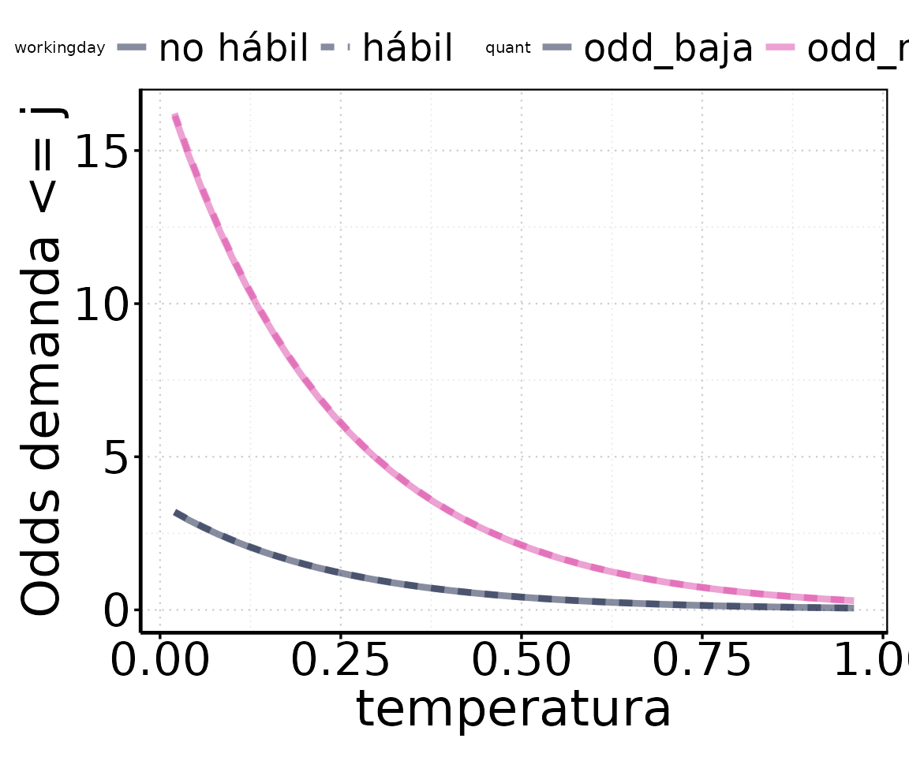
Efectos multiplicativos sobre las odds
beta exp(-beta)
temp 4.237 0.014
workingdayhábil -0.005 1.005Si temp=1 en un día hábil, entonces odds(p_baja) y odds(p_media) son=
baja media
0.050 0.255 Si temp=2 en un día hábil, entonces odds(p_baja) y odds(p_media) son=
baja media
0.001 0.004 Efectos multiplicativos sobre las odds
beta exp(-beta)
temp 4.237 0.014
workingdayhábil -0.005 1.005Por tanto, la odds ratio ( e^{-\beta_{temp}}) es:
or_temp_baja or_temp_media
0.014 0.014 Si temp=1 en un día hábil, entonces odds(p_baja) y odds(p_media) son=
baja media
0.050 0.255 Si temp=2 en un día hábil, entonces odds(p_baja) y odds(p_media) son=
baja media
0.001 0.004 Efectos marginales sobre la probabilidad de la categoría j
Efectos marginales sobre la probabilidad de la categoría j
Dado el siguiente modelo de regresión logística multinomial: \ln \frac{\mathbb{P}(y_{i} \leq j)}{\mathbb{P}(y_{i} > j) } = \alpha_{j} - (\beta_{1}x_{1i} + \dots + \beta_{k}x_{ki}) y \begin{align}\mathbb{P}(y_{i} = j) &= \mathbb{P}(y_{i}<j) - \mathbb{P}(y_{i}< j-1) \\ \\ &= \frac{1}{1 + e^{-(\alpha_{j} - (\beta_{1}x_{1i} + \dots + \beta_{k}x_{ki}) )}} - \frac{1}{1 + e^{-(\alpha_{j-1} - (\beta_{1}x_{1i} + \dots + \beta_{k}x_{ki}))}} \end{align} . . .
Queremos saber el efecto marginal de los predictores sobre la probabilidad de observar cada categoría j: \{1, \dots, J\}. Formalmente:
\frac{\partial \mathbb{P}(y_{i} = j)}{\partial x_{k}} = \cdots
Efectos marginales sobre la probabilidad de la categoría j
Después de varios pasos, obtenemos:
\frac{\partial \mathbb{P}(y_{i} = j)}{\partial x_{k}} = -\beta_{k} \cdot \bigg( \mathbb{P}(y_{i} \leq j) \cdot (1 - \mathbb{P}(y_{i} \leq j)) - \mathbb{P}(y_{i} \leq j-1) \cdot (1 - \mathbb{P}(y_{i} \leq j-1)) \bigg)
donde: \mathbb{P}(y_{i} \leq j) = \text{logit}^{-1}(\alpha_{j} - (\beta_{1}x_{1i} + \dots + \beta_{k}x_{ki})) \quad \text{para todo } j
Efectos marginales sobre la probabilidad de la categoría j
Para los casos especiales j=1 y j=J observamos que
- \frac{\partial \mathbb{P}(y_{i} = 1)}{\partial x_{k}} = -\beta_{k} \cdot \bigg( \mathbb{P}(y_{i} \leq 1) \cdot (1 - \mathbb{P}(y_{i} \leq 1)) - 0\bigg)
- \frac{\partial \mathbb{P}(y_{i} = J)}{\partial x_{k}} = - \beta_{k} \cdot \bigg( 0 - \mathbb{P}(y_{i} \leq J-1) \cdot (1 - \mathbb{P}(y_{i} \leq J-1))\bigg) = \beta_{k} \cdot \bigg( \mathbb{P}(y_{i} \leq J-1) \cdot (1 - \mathbb{P}(y_{i} \leq J-1))\bigg)
Por tanto,:
- Para j=1 el efecto marginal sobre la probabilidad \mathbb{P}(y=1) tiene el signo contrario que el efecto sobre la variable latente y^{*}, \beta_k.
- Para j=J el efecto marginal sobre la probabilidad \mathbb{P}(y=J) tiene el mismo signo que el efecto sobre la variable latente y^{*}, \beta_k.
Efectos marginales sobre la probabilidad de la categoría j
Para las categorías intermedias, en cambio:
\frac{\partial \mathbb{P}(y_{i} = j)}{\partial x_{k}} = -\beta_{k} \cdot \bigg( \mathbb{P}(y_{i} \leq j) \cdot (1 - \mathbb{P}(y_{i} \leq j)) - \mathbb{P}(y_{i} \leq j-1) \cdot (1 - \mathbb{P}(y_{i} \leq j-1)) \bigg)
Podemos notar que:
- Siempre \mathbb{P}(y_{i} \leq j) > \mathbb{P}(y_{i} \leq j-1) (e.j. 0.8 > 0.7)
- Pero \bigg( \mathbb{P}(y_{i} \leq j) \cdot (1 - \mathbb{P}(y_{i} \leq j)) - \mathbb{P}(y_{i} \leq j-1) \cdot (1 - \mathbb{P}(y_{i} \leq j-1)) \bigg) puede ser positivo o negativo. (e.j. 0.8*(0.2) - 0.7*(0.3) = -0.05 )
- Por tanto, para las categorias j intermedias el signo del efecto marginal sobre la probabilidad no necesariamente coincide con el signo del efecto sobre la variable latente y^{*}, \beta_k.
Efectos marginales sobre la probabilidad de la categoría j
En nuestro ejemplo: \ln \frac{\mathbb{P}(y_{i} \leq j)}{\mathbb{P}(y_{i} > j)}= \alpha_{j} - (\beta_{1}\text{temp}_{i} + \beta_{2}\text{hábil}_{i}), donde \mathbb{P}(y_{i} = j) = \mathbb{P}(y_{i}<j) - \mathbb{P}(y_{i}< j-1) = \frac{1}{1 + e^{-(\alpha_{j} - (\beta_{1}x_{1i} + \dots + \beta_{k}x_{ki}) )}} - \frac{1}{1 + e^{-(\alpha_{j-1} - (\beta_{1}x_{1i} + \dots + \beta_{k}x_{ki}))}}
Value Std. Error
temp 4.237 0.111
workingdayhábil -0.005 0.044
Efectos marginales sobre la probabilidad de la categoría j
\mathbb{P}(y_{i} = j) = \mathbb{P}(y_{i}<j) - \mathbb{P}(y_{i}< j-1)
\frac{\partial \mathbb{P}(y_{i} = j)}{\partial x_{k}}
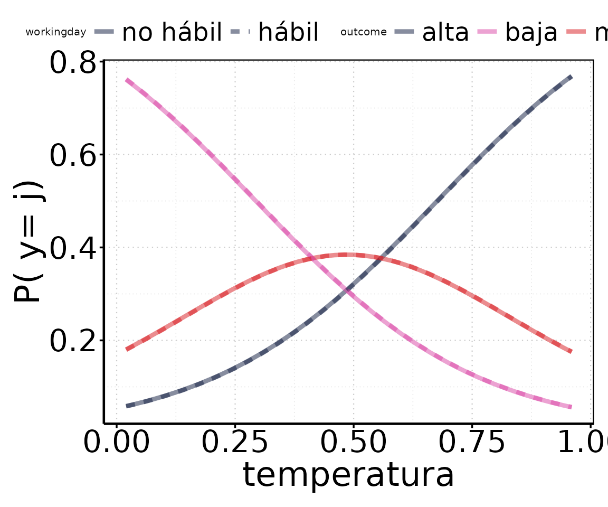
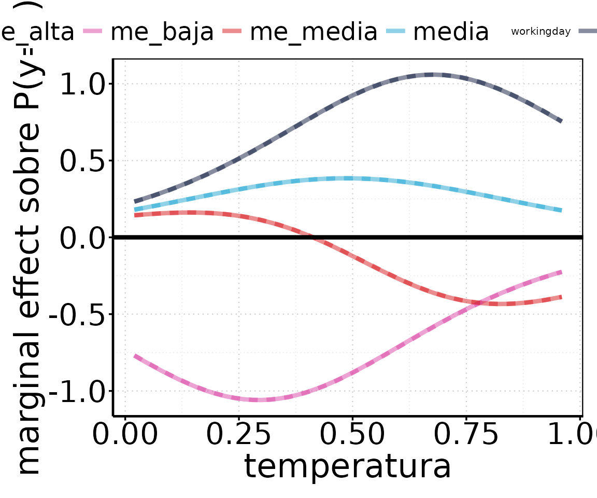
Efectos marginales sobre la probabilidad de la categoría j
- Efectos marginales son esencialmente heterogéneos. No hay un efecto sino muchos.
- Heterogeneidad crece con la complejidad del modelo: número de predictores, interacciones, etc.
- Más aún, en el caso de modelos de regresión logística multinomial/ordinal, los efectos marginales no son necesariamente monotónicos (pueden cambiar de signo).
- En la práctica, muchas veces queremos UN número que resuma el efecto marginal.
Objetivo: resumir la heterogeneidad sin confundir un promedio con un efecto universal.
Cantidades de interes:
- Average Marginal Effects (AME)
- Marginal Effects at the Mean (MEM)
- Marginal Effects at Representative Values (MER)
Efectos marginales sobre la probabilidad de la categoría j: AME
\text{Aproximación numérica:} \quad \frac{1}{n} \sum_{i} \frac{\partial p_{ij}}{\partial x_{k}} \approx \frac{1}{n} \sum_{i} \frac{p_{ij}(x_{1}, \dots ,x_{k} = c + \delta) - p_{ij}(x_{1}, \dots ,x_{k} = c )}{\delta}
AME de temp:
# A tibble: 1 × 3
baja media alta
<dbl> <dbl> <dbl>
1 -0.765 -0.094 0.859 factor AME SE z p lower upper
temp -0.815 0.009 -89.916 0.000 -0.833 -0.797Efectos marginales sobre la probabilidad de la categoría j: MEM
\text{Aproximación numérica:} \quad \frac{\partial p_{ij}}{\partial x_{k}} \approx \frac{p_{ij}(x_{1}=\bar{x_{1}}, \dots ,x_{k} = \bar{x_{k}} + \delta) - p_{ij}(x_{1}=\bar{x_{1}}, \dots ,x_{k} =\bar{x_{k}} )}{\delta}
MEM de temp:
# A tibble: 2 × 4
id baja media alta
<chr> <dbl> <dbl> <dbl>
1 no hábil -0.799 -0.186 0.984
2 hábil -0.801 -0.182 0.983Gracias
Hasta la próxima clase
Mauricio Bucca